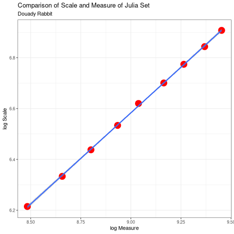

The Emergence of Patterns in Nature and Chaos Theory
Table of Contents
- 1. Introduction Ryan
- 2. Fractals
- 3. Connecting Fractals to Natural Processes Ryan
- 4. The Fibonacci Sequence and the Golden Ratio
- 5. Julia Sets Ryan
- 6. Mandelbrot Set Ryan
- 7. Conclusion Ryan
- 8. Appendix
- 9. Bibliography
1 Introduction Ryan
1.1 A note on Images in this report
2 Fractals
2.1 Definition of a Fractal Ryan
2.2 Fractals Generally James
2.3 Fractal Dimension
2.3.1 Topological Equivalence Ryan
2.3.2 Hausdorff Measure Ryan
2.3.3 Hausdorff Dimension Ryan
2.3.4 Box Counting Dimension James
2.4 Generating Self Similar Fractals Ryan
2.4.1 Vicsek Fractal
2.4.2 Turtle
2.5 Fractal Dimensions Sans Self Similarity Ryan
3 Connecting Fractals to Natural Processes Ryan
3.1 Constructing a Simple Process
3.2 The Fibonacci Numbers
3.3 The Dimension of the Fractal
4 The Fibonacci Sequence and the Golden Ratio
4.1 The Golden Ratio Ryan
4.2 Golden Ratio In terms of the Fibonacci Sequence
4.2.1 Prove that the Sequence is Bounded James
4.2.2 Find the Limit James
4.3 Comments Ryan
4.3.1 Equivalent forms of the Golden Ratio
4.4 A closed Solution for the Fibonacci Numbers Ryan
4.4.1 Golden Ratio
4.5 Sunflower Seeds; Fibonacci Numbers in Nature Ryan
5 Julia Sets Ryan
5.1 Introduction
5.2 Motivation
5.3 Plotting the Sets
5.4 Dimension of the Julia Set
7fac73de0d24ebddcf0874b6cf8d3531b064]: 
6 Mandelbrot Set Ryan
7 Conclusion Ryan
8 Appendix
8.1 Code Listings
8.2 Resources Used for the Hausdorff Dimension
8.3 Functions for constructing the Julia Set
9 Bibliography
Fouss, François, Marco Saerens, and Masashi Shimbo. n.d. Algorithms and Models for Network Data and Link Analysis. Cambridge University Press.
Nicodemi, Olympia, Melissa A. Sutherland, and Gary W. Towsley. n.d. An Introduction to Abstract Algebra with Notes to the Future Teacher. Pearson Prentice Hall.
Zill, Dennis G, and Michael R Cullen. n.d. Differential Equations (version 7). 7th ed. Brooks/Cole.
Zill, Dennis G., and Michael R. Cullen. n.d. “8.4 Matrix Exponential.” In Differential Equations with Boundary-Value Problems, 7th ed. Brooks/Cole, Cengage Learning.
NOITEMDATA:CTANPackageAnimate
NOITEMDATA:PdftexThereAny
NOITEMDATA:gomoryBenoitMandelbrot19242010
NOITEMDATA:mandelbrotFractalGeometryNature1982
NOITEMDATA:sandersonFractalsAreTypically2017
NOITEMDATA:vicsekFractalGrowthPhenomena1992
NOITEMDATA:telChaoticDynamicsIntroduction2006
NOITEMDATA:edgarMeasureTopologyFractal2008a
NOITEMDATA:gouyetPhysicsFractalStructures1996
NOITEMDATA:falconerFractalGeometryMathematical2003b
NOITEMDATA:jiangFractalAnalysisComplexity1998
NOITEMDATA:zhuFractalMechanismCoastline2002
NOITEMDATA:zhongFractalPropertiesShoreline2017
NOITEMDATA:mandelbrotHowLongCoast1967
NOITEMDATA:mandelbrotMisBehaviourMarkets2008
NOITEMDATA:Fractal2020
NOITEMDATA:peitgenChaosFractalsNew2004
NOITEMDATA:gilmoreTopologyChaosAlice2002
NOITEMDATA:strogatzNonlinearDynamicsChaos2015
NOITEMDATA:baderSpacefillingCurvesIntroduction2013
NOITEMDATA:liIntegrationFuzzyLogic2006
NOITEMDATA:grahamConcreteMathematicsFoundation1994
NOITEMDATA:edgarMeasureTopologyFractal2008
NOITEMDATA:markpollicottFractalsDimensionTheory2005
NOITEMDATA:ListFractalsHausdorff2020
NOITEMDATA:falconerFractalGeometryMathematical2003
NOITEMDATA:rcoreteamLanguageEnvironmentStatistical2020
NOITEMDATA:bezansonJuliaFreshApproach2017
NOITEMDATA:WelcomePythonOrg
NOITEMDATA:JuliaGraphicsLuxorJl2020
NOITEMDATA:PillowPillowPIL
NOITEMDATA:JuliaImagesImagesJl2020
NOITEMDATA:llcImageMagick
NOITEMDATA:Astropy
NOITEMDATA:JuliaAstroJuliaAstro
NOITEMDATA:shellyallenFibonacciNature
NOITEMDATA:benedettapalazzoNumbersNatureFibonacci2016
NOITEMDATA:MinarovaNikoletta2014TFSN
NOITEMDATA:NatureGoldenRatio2018
NOITEMDATA:robertlambHowAreFibonacci2008
NOITEMDATA:ronknottFibonacciNumbersGolden2016
NOITEMDATA:prasadHowFibonacciNumber2018
NOITEMDATA:brownHistoryApplicationsFibonacci2019
NOITEMDATA:giordanoFirstCourseMathematical2014
NOITEMDATA:briggsTurbulentMirrorIllustrated1989
NOITEMDATA:mullerThisEquationWill2020
NOITEMDATA:zillDifferentialEquationsBoundaryvalue2009
NOITEMDATA:churchillComplexVariablesApplications2014
NOITEMDATA:bohannonSunflowersShowComplex2016
NOITEMDATA:ridleyPackingEfficiencySunflower1982
NOITEMDATA:mathaiConstructingSunflowerHead1974
NOITEMDATA:vogelBetterWayConstruct1979
NOITEMDATA:farrellMathAdventuresPython2019
NOITEMDATA:JuliaSet2020
NOITEMDATA:mcmullenHausdorffDimensionConformal1998
NOITEMDATA:bownScienceMandelbrotSet
NOITEMDATA:lehmanReadingsMathematicsComputer2010
NOITEMDATA:levinSolvingRecurrenceRelations2018